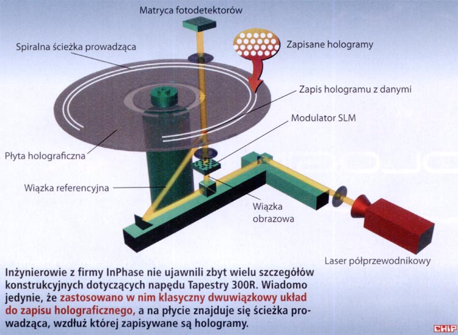
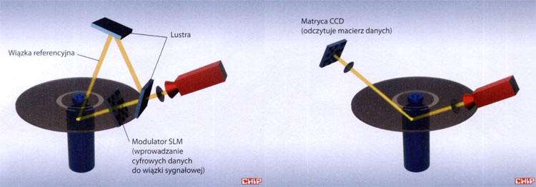

Z czym przeciętnemu użytkownikowi peceta kojarzy się słowo gobelin (ang. tapestry)? Do niedawna odpowiedź na to pytanie była prosta: z przemysłem włókienniczym lub muzealnictwem. Dzięki firmie InPhase już niedługo wyraz ten diametralnie zmieni swe znaczenie.
Dziewiątego września bieżącego roku w Amsterdamie na targach International Broadcasters Conference firma InPhase pokazała prototypowy napęd holograficzny Tapestry 300R wraz z nośnikiem HDS300, mieszczącym - bagatela - 300 GB danych. Jest to już kolejna, trzecia konstrukcja spółki InPhase, założonej przez telekomunikacyjnego giganta - korporację Lucent Technologies. Firma InPhase już od stycznia 2001 roku zajmuje się konstruowaniem wysokopojemnych nośników holograficznych i odpowiednich napędów. Co więcej, inżynierowie z InPhase zapowiadają, że wkrótce zaprezentują nośnik o gigantycznej pojemności 1,6 TB! Jak to się dzieje, że na nieco większej od krążka CD/ DVD (średnica 12 cm), bo 13-centymetrowej płycie HDS (Holographic Data Storage) da się zmieścić tak pokaźną objętość danych?
| Dysk firmy Optware | Blu-ray | DVD | |
|---|---|---|---|
| Średnica płyty | 12 cm | 12 cm | 12 cm |
| Pojemność płyty jednowarstwowej | 1 TB | 27 GB | 4,7 GB |
| Szybkość transmisji danych (prędkość 1x) | 1 GB/s | 4,5 MB/s | 1350 KB/s |
| Typ lasera | niebieski (405 nm) i czerwony (650 nm) | niebieski (405 nm) | czerwony (650 nm) |
| Czas odtwarzania materiału wideo MPEG-2 (DVD) dla płyty | ok. 3000 godzin | 13 godzin | 133 minuty |
Techniki holograficzne pozwalające na zapis i odczyt trójwymiarowych obrazów (tzw. mhologramów) za pomocą światła laserowego znane są już od połowy lat sześćdziesiątych ubiegłego wieku. Technologie holograficzne początkowo dawały jedynie sposobność zarejestrowania monochromatycznych, przestrzennych zdjęć na specjalnych szklanych płytach, pokrytych emulsją fotograficzną. Nieco później pojawiły się hologramy zapisywane na światłoczułym polimerowym papierze, a do ich odczytu nie trzeba już było stosować laserów - wystarczyło zwykłe widzialne światło. Takie hologramy znajdują się m.in. w wielu muzeach i wystawiane są na pokazach nowoczesnych technologii.
Na początku lat osiemdziesiątych firma IBM rozpoczęła prace nad wykorzystaniem holografii do zapisu cyfrowych informacji. W teorii holografia pozwala bowiem upakować ponad 100 GB danych na centymetrze kwadratowym powierzchni nośnika. Jest to dwa razy więcej, niż mieści cała dwuwarstwowa płyta Blu-ray! Naukowcy, którzy zdawali sobie sprawę z tempa rozwoju informatyki i rosnącego zapotrzebowania na pojemność używanych nośników danych, już dawno dostrzegli potęgę holografii przy zapisie informacji.
Pierwsze holograficzne „dyski”, zbudowane na bazie kryształów niobianu litu, zajmowały ogromne pomieszczenia laboratoryjne i wymagały do swojej pracy laserów dużej mocy. Takie urządzenie trudno było zminiaturyzować, tak by zmieściło się ono na biurku obok peceta, nie mówiąc już o wnętrzu obudowy. Znaczący postęp w dziedzinie holograficznego zapisu cyfrowych informacji dokonał się dopiero na przełomie wieków, gdy wynaleziono specjalne, trwałe materiały fotopolimerowe, które dało się łatwo nałożyć na powierzchnię plastikowego dysku. Drugim czynnikiem, decydującym o obserwowanym obecnie przyspieszeniu prac nad holograficznym zapisem komputerowych danych, było rozpoczęcie masowej produkcji półprzewodnikowych laserów do nagrywarek CD i DVD, dysponujących już mocą wystarczającą do utrwalenia hologramu.
Do zapisywania hologramów wykorzystuje się falową naturę światła, a ściślej mówiąc, zmiany jego fazy i amplitudy. Wychodzącą z lasera wiązkę (patrz: rysunek 1) rozszerza się w układzie soczewek, a następnie dzieli się ją na dwie części (tzw. wiązkę obrazową i referencyjną), stosując do tego celu specjalne lustro - płytkę światłodzielącą. Dalej dwie wiązki światła biegną już różnymi drogami. Następnie na trasie wiązki obrazowej umieszcza się fotografowany przedmiot (np. obraz reprezentujący cyfrowe dane). Fala światła, odbijając się od niego, zmienia swą amplitudę i fazę. Jeżeli teraz skrzyżujemy wiązkę obrazową z referencyjną, to w miejscu ich przecięcia powstanie tzw. wzór interferencyjny, czyli zbiór ciemnych i jasnych prążków, powstających się na skutek nałożenia na siebie amplitud i faz obu fal. Wzór ten tworzy swego rodzaju siatkę dyfrakcyjną, na której może się uginać światło.
Prototyp napędu holograficznego Tapestry 300R firmy InPhase jest na razie większy od kilku nagrywarek DVD, ale wkrótce ma zostać zmniejszony. Wykorzystuje on 13-centymetrowe płyty HDS.
Przy zapisie hologramu rejestruje się na kliszy fotograficznej ów wzór interferencyjny. Trzeba tylko pamiętać, by materiał rejestrujący dane znalazł się dokładnie w miejscu przecięcia wiązek. Co ciekawe, to właśnie wzór interferencyjny zawiera pełną trójwymiarową informację o fotografowanym obiekcie. Aby odtworzyć trójwymiarowy obraz sfotografowanego przedmiotu lub odczytać cyfrowe dane, wystarczy oświetlić hologram wiązką laserową - światło ugnie się na zapamiętanej w materiale holograficznym siatce dyfrakcyjnej (patrz: rysunek 2), tworząc kompletny obraz zarejestrowanego przedmiotu.
Charakterystyczną cechą hologramów jest ich nielokalność, czyli zapamiętywanie pełnej informacji o trójwymiarowym obiekcie na całej naświetlonej w trakcie zapisu powierzchni. Oznacza to, że podczas odczytu, nawet w sytuacji, gdy oświetlimy światłem laserowym tylko mały fragment hologramu (nie mniejszy jednak od długości fali światła użytej do jego zapisu), zawsze dotrzemy do pełnej utrwalonej na kliszy informacji. Co więcej, zapisany hologram łatwo da się podzielić na kilka mniejszych części, a odczytywany z nich obraz będzie taki sam, jaki był na pierwotnej, całej fotografii. Opisana właściwość jest szczególnie ważna przy zapisie cyfrowych danych, gdyż nawet w wypadku znacznego uszkodzenia hologramu odczytane informacje będą zawsze w stu procentach poprawne. Nie ma więc potrzeby stosowania algorytmów korekcji błędów!
Po tej skróconej lekcji fizyki wróćmy znów do napędu Tapestry firmy InPhase. Bazuje on dokładnie na opisanej powyżej zasadzie działania (patrz: rysunek 1). Fotografowany holograficznie przedmiot zastąpiony zostaje obrazem zer i jedynek, nakładanym na wiązkę obrazową za pomocą modulatora SLM (Spatial Light Modulator) - wykorzystano tu zawierający ponad dwa miliony miniaturowych lusterek układ DLP, znany z seryjnie produkowanych projektorów.
Element SLM zamienia dane przesyłane z komputera na matrycę 1696x1710 punktów, gdzie ciemny piksel odpowiada jedynce, a jasny zeru. Następnie niosąca informacje wiązka obrazowa interferuje z wiązką referencyjną na powierzchni płyty holograficznej, gdzie dane zostają ostatecznie utrwalone. Sam proces zapisu przypomina wypalanie płyt CD-R/DVD±R, z tą różnicą, że teraz najmniejszą jednostką informacji nie są pojedyncze bity ukryte w pitach i landach, ale punkty o rozmiarze ok. 100 µm2, zawierające 354 KB danych!
Zastosowany przez firmę InPhase modulator SLM jest w stanie wyświetlić 2000 obrazów z danymi na sekundę, co teoretycznie pozwala na zapis ok. 690 MB danych w ciągu sekundy. Niemniej wypalanie na płycie HDS jest nieco wolniejsze i uzyskana prędkość zapisu danych wynosi „zaledwie” 20 MB/s. Tapestry 300R wykorzystuje światło niebieskiego lasera o długości fali 407 nm, stosowanego także m.in. w napędach Blu-ray. Jak już wspomniałem, dane zapisywane są na przezroczystych nośnikach o średnicy 130 mm i grubości 3,5 mm. Powierzchnię płyty HDS pokryto specjalnym fotopolimerem holograficznym opracowanym w laboratoriach firmy Bell. Materiał ten pozwala na jednokrotny zapis hologramów i ich wielokrotny odczyt, a jego trwałość szacowana jest na co najmniej 50 lat.
Przedstawiony w Amsterdamie napęd Tapestry 300R nie był pierwszym napędem holograficznym firmy InPhase. Pół roku wcześniej zaprezentowała ona poprzedni model - Tapestry 200R, a w kwietniu 2002 roku - Tapestry 100R. Mogły one zapisać odpowiednio 200 i 100 GB danych na jednej płycie. Co ważne, każda kolejna nagrywarka była pod względem rozmiarów znacząco mniejsza od poprzednika i obecny Tapestry 300R da się już schować do dużej obudowy peceta, podczas gdy pierwszy zajmował niemal całe biurko. InPhase planuje rozpocząć seryjną produkcję swych napędów na przełomie 2006 i 2007 roku. Wcześniej jednak musi pokonać trudności związane z miniaturyzacją. Docelowo napędy Tapestry mają mieć rozmiary standardowego czytnika DVD-ROM, co najwyżej zajmującego dwie zatoki 5,25 cala. Jak twierdzą inżynierowie opiekujący się projektem, nie jest to łatwe zadanie ze względu na duże upakowanie elementów optycznych.
InPhase to nie jedyna firma zajmująca się pamięciami holograficznymi. Nad własnym napędem pracuje też Optware (...). Teraz firma ta tworzy system holograficznego przechowywania danych HVC (Holographic Versatile Card) na kartach kredytowych. Nośniki te będą miały pojemność 30 GB i znajdą zastosowanie przede wszystkim w bankowości i sektorze ubezpieczeniowo-medycznym. Premiera kart HVC nastąpić ma w 2006 roku. Do czołówki producentów związanych z holografią zaliczyć też trzeba dwie kolejne firmy - Aprilis i Polight Technologies, które wkrótce zaprezentują swoje holograficzne nośniki danych.
Jak widać, zanosi się na to, że dopiero co wkraczające na rynek płyty Blu-ray i HD-DVD bardzo szybko zyskają nowych konkurentów w postaci nośników holograficznych. Z jednej strony to dobrze, bo ceny urządzeń szybko spadną, a my, użytkownicy, zyskamy szybsze i pojemniejsze nośniki danych. Z drugiej jednak strony wcale mi się nie uśmiecha ciągła wymiana napędów i przegrywanie danych na coraz to nowsze płyty.